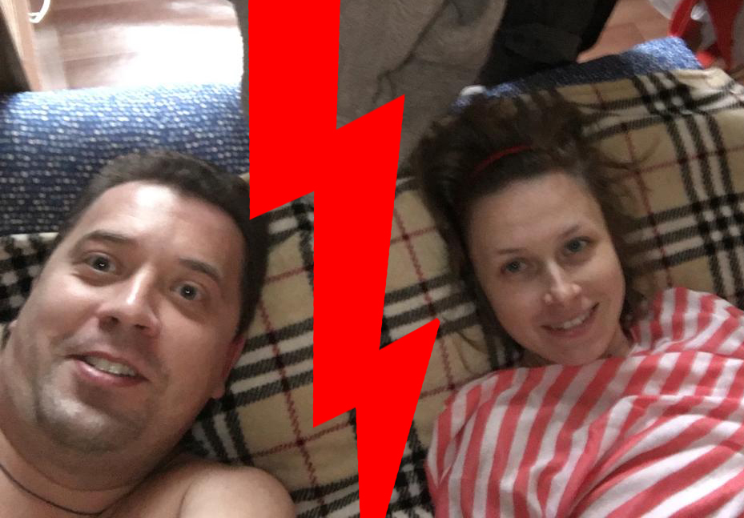
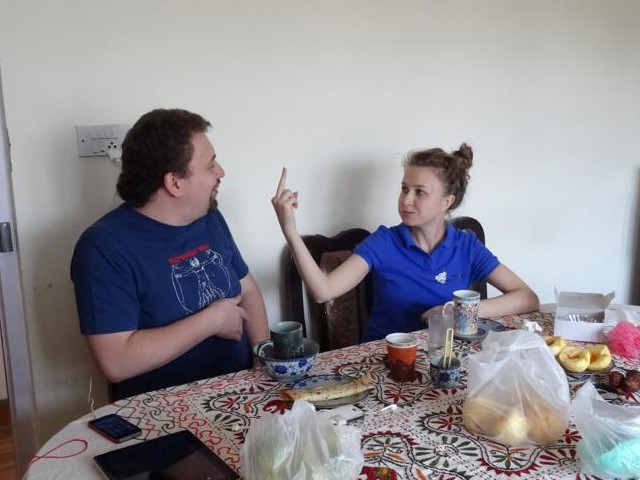
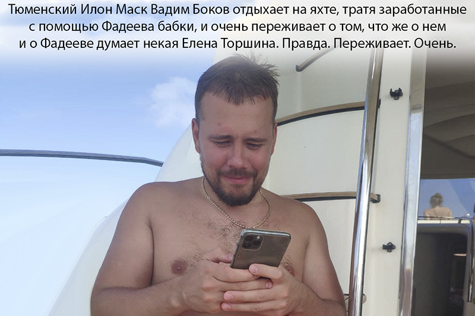
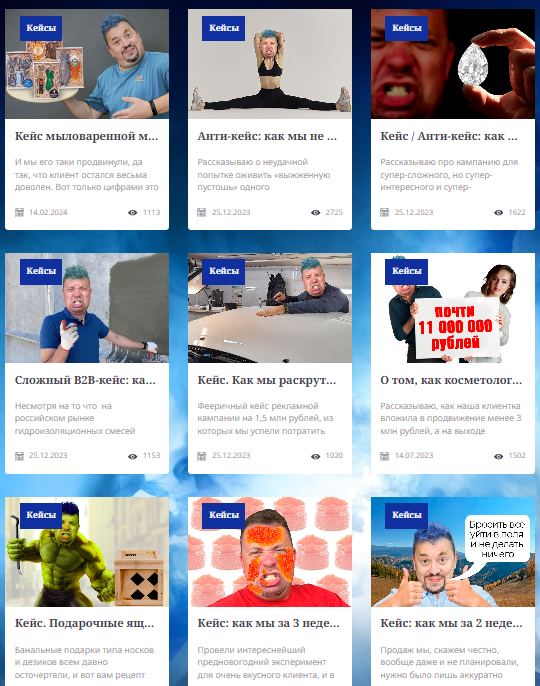

Я – Миша Фадеев, он же Миша Фадееы, владелец маркетингового агентства самого полного цикла (почему оно так – см. здесь ). А еще я со-основатель группы компаний «Торшинский трест» и бывший бизнес-партнер маркетолога Елены Торшиной, широко известного в весьма нешироких кругах. Вместе с Леной мы проработали не один год, а теперь, как вы наверняка догадались, работаем порознь. И даже конкурируем – во всяком случае, в сознании Торшиной. Правда, конкурировать со мной она пытается явно не рыночными методами, а в качестве «топлива» для соперничества использует далеко не лучшее чувство.
Это я, первый маркетолог с калькулятором в руках, который, если верить отзывам Торшиной, ничегошеньки толком не умеет, кругом обманывает и вообще редкостный гад
Какое? Зависть. Это чувство сложное, неоднозначное. Причем далеко не всегда плохое. Просто бывает оно разных типов. Если отбросить мелкие градации, то примерно двух. Первый тип – это когда человек глядит на успехи окружающих и пожирает себя изнутри безо всяких созидательных действий. Мучается, страдает, ненавидит более удачливых особей – и не делает ничего, чтобы благородными методами прокачаться до их (удачливых особей) уровня. Второй же тип зависти предполагает как раз иной подход. Видим, что у кого-то все складывается успешно, и, не испытывая негатива к этому человеку, но взяв его за ориентир, пытаемся честно догнать и перегнать. Не скажу, что я вообще строю свою жизнь и карьеру именно вокруг таких парадигм. Но если уж выбирать, то я за второй тип зависти. Он практичен и конструктивен.
Увы, вынужден признать, что Елена Торшина явно испытывает по отношению ко мне зависть первого типа – не конструктивную и позитивную, а как раз злую и антисозидательную. К чему это приводит? Хотя бы к тому, что Лена перманентно выплескивает в интернет-пространство посвященные мне тексты. Причем в этих текстах есть совершенное четкие указания на меня и мои профессиональные качества. Указания эти, правда, дают вовсе не тот эффект, на который рассчитывает завидующая дама, а прямо противоположный. Но об этом ниже.
Для начала – очень коротко об истории наших взаимоотношений с госпожой Торшиной. Думаю, процентов 90 читателей моего сайта FFAD.ru и блога в телеге не знают/не помнят – кто это такая. Оно и понятно: в своих текстах я уже давненько о Торшиной не упоминал, ибо история пройденная, и с момента нашего с ней расставания в моих жизни и бизнесе произошла масса всякого крутого и интересного. И не упоминал бы я о госпоже Торшиной и дальше, но – см. выше. Вынужден сделать исключение: количество посвященных мне «обличающих» (как думает Лена) материалов превысило все разумные пределы. Причем все они насыщены нарочито негативными отзывами Торшиной о моей скромной персоне.
Так вот, об отношениях. Начались они в 2010 году, когда Лена пришла в мою компанию на позицию наемного сотрудника – девочки-помощницы тогдашней руководительницы Марины Рожковой. Затем Лена ушла, а в 2016 вернулась уже в качестве равноправного партнера нашего совместного предприятия – группы компаний «Торшинский Трест».
Проработали мы рука об руку до 2018 года, когда Торшина снова ушла. Со скандалом. Все это я подробно описал в посте по ссылке, повторяться не стану.

Уходила Елена на своих условиях. Отработка авансов, заплаченных клиентами до ухода Торшиной, была оставлена мне. Как и, например, выплата тринадцатых зарплат сотрудникам по итогам года (это, если что, вполне себе ощутимое финансовое бремя – миллионы рублей). Того самого 2018 года, в котором Торшина весьма неплохо заработала на труде тех самых сотрудников. Но – ладно. Суть в том, что Лена решила отряхнуть со своих ног пепел совместной работы и начать все с чистого листа в рамках новообразованной ИПшечки – и без обязательств перед кем-либо.
Я, в принципе, не возражал – а какие у меня были варианты? Попросил лишь об одном: удалить с ее сайта статьи о кейсах, реализованных во время нашего с Леной сотрудничества. В чем суть вопроса? У Елены был (да и сейчас есть) Торшинский сайт. Мы задействовали его для привлечения новых клиентов. Сама Лена публиковала там в основном веселые матюкливые статьи о своем деревенском детстве – вечно пьяных бабушках, говне, мертвых котятах и пр. Народу они нравились, блог Елены Торшиной был в то время популярен. Но подобный контент в принципе НЕ мог привлечь заказчиков рекламно-маркетологических услуг. Поэтому я настаивал на публикации на Торшинском сайте еще и статей иного типа: реальных кейсов. Подробных рассказов о наших рекламных проектах для клиентов – с цифрами, графиками и фактами. Статьи-кейсы писались на Торшинский сайт моими авторами под моим началом и контролем. Причем, как правило, еще и о кампаниях, которые проводились без Лены или с ее минимальным участием. Елену Торшину эти статьи адски раздражали: она то пыталась запретить их публиковать, то грозилась их нафиг скопом удалить. Хотя именно они, эти рассказы с конкретными результатами работы, как раз и привлекали новых клиентов! Предприниматели видели, как мы работаем, впечатлялись – и приходили заказывать услуги! Вот в чем был цимес, который Лена не ощущала!
Ну а дальше смотрите. Лена ушла, работает сама на себя, а предприниматели… продолжают заходить на ее сайт, читать кейсы (к которым маркетолог Елена Торшина толком не имела отношения – ни к самим кампаниям, ни к текстам о них) и… заказывать услуги. Вот я и попросил тексты удалить.
Кстати, мои опасения были вовсе не беспочвенными. Тот же Вадим Боков из Тюмени, он же Тюменский Илон
Маск, он же создатель тюменских наушников
СG Pods
еще в начале 2019 года пришел ко
мне с
тюменскими
российскими рублями после прочтения
кейса о раскрутке китайских «ушей» Bluedio
(«Блядио»)
. Ему понравилось – и
он захотел такую же огненную кампанию. Bluedio мы продвигали во времена «Торшинского треста», но Лена
Торшина конкретно к сему проекту отношения не имела. А статья-кейс, которая изначально появилась на
Торшинском сайте (и до сих пор там висит), была написана автором под моим началом. Уже потом, после
«развода» с Торшиной, я перенес текст на FFAD.ru.
Один из мотиваторов, которыми мы в рамках кампании обыгрывали особенности наушников «Блядио»
В общем, моя позиция, как я считаю, была максимально прозрачной. Однако супер-маркетолог Торшина никакие
статьи со своего ресурса не удалила. И даже выкатила против меня… иск в суд. Формальная претензия
заключалась в том, что я разместил на своем сайте FFAD.ru статью Торшиной «Как работать с отзывами о
продуктах в поисковой выдаче», которая также давно висела и на сайте Лены. Однако суд признал наше
совместное авторство материала про поисковую выдачу. То есть было определено, что не Лена автор
текста,
а авторов два – Елена Торшина и я. Как следствие, я имею полное право публиковать этот текст и на своем
ресурсе. Вот тебе, бабка, и
Юрьев
Ленкин день! Далее я мыслил так. Если уж Елена Торшина решила
потягаться со мной в правовом поле и установить авторство одного текста на ее сайте, то давайте-ка
пойдем дальше по указанному ею направлению! Я возьму и подам встречный иск относительно еще 43 статей на
ее ресурсе, которые были также написаны при моем непосредственном участии. И к большей части которых
маркетолог Торшина имела очень опосредованное отношение. Сказано – сделано: подал в суд. И суд снова
признал именно соавторство, т. е. тексты оказались снова не Лениными, а нашими! В общем…
Нет, даже не
буду здесь описывать все наши с Торшиной дальнейшие судебные разбирательства. Они были долгими,
многогранными… и имели однозначный итог: Лена все суды проиграла. Подробности – в этом большом
материале.
Не стоит думать, что маркетолог Елена Торшина проигрывала суды только мне. Она также проиграла
целый ряд судов своей клиентке-психологине Ольге Юрковской – последняя обвинила Лену в
предоставлении некачественных услуг. Многоэтапная история их разбирательств, закончившаяся
разгромным поражением Торшиной, без проблем ищется в интернете по фамилиям.
Или вот из свеженького: Лена взялась провести контекстную кампанию бренду бытовой техники Dauken
из Санкт-Петербурга – и сделала работу из рук вон плохо. Итог – очередной проигранный иск.
Ребята дали очень интересные отзывы о маркетологе Елене Торшиной – рекомендую почитать обо всей
этой истории здесь.
Что в итоге? Ну, начну даже не с эффекта от проигранных судов. Перво-наперво стоит сказать, что во времена «Торшинского Треста» Лена считала именно себя истинным эпицентром нашего бизнес-проекта – лидером, руководителем, гвоздем программы и гением маркетинга. У нее сложилось ложное ощущение, будто контора успешно существовала исключительно благодаря ей – а всякие Фадееы, Соломатины и прочие лохи присутствовали лишь в виде некоей малозначительной, а иногда и крайне раздражающей, назойливой массовки. Исчезни они вдруг – ничего бы для Лены и не поменялось. Она продолжила бы столь же стремительно лететь к успеху! А то и даже быстрее, ведь от ее щиколоток отцепились бы эти спиногрызы, жрущие Ленины деньги. Но когда «спиногрызы» таки отцепились, для Торшиной все как раз пипец как сильно изменилось. Внезапно оказалось, что доходы упали, клиентов (во всяком случае, в прежнем количестве и прежней платежеспособности) нет, технологий – тоже, бэкофис отсутствует, ну и так далее. Все исчезло! Оно и логично: вся команда спецов и вся инфраструктура после «развода» остались у меня, поскольку именно я эту инфраструктуру построил и всю эту команду собрал и обучил. Причем сделал это еще ДО основания «Торшинского Треста» и без участия Лены.
Примерно так можно было описать Ленин уход: пошел бы, Фадееы, понятно куда вместе со всеми обязательствами… перед всеми. А я уйду в новую жизнь и буду стоить бизнЫс!
Что тут можно сказать? Ну, наверное, Лена все же не была в «Торшинском Тресте» истинным лидером. Гениальным маркетологом Торшину тоже нельзя было назвать. Да, она являлась членом команды – важным, но не ключевым. Ну и до кучи она была потешным маскотом конторы. Это тоже имело некий вес, но не первостепенный. Первостепенной была роль драйвера бизнеса, коим выступали (внезапно) ключевые люди моей команды. Вот они-то и наводили суету, приносившую основные бабки всем – включая и Лену… И, кстати, продолжают делать это уже в рамках персонального Фадеевского проекта и по сей день, с ежегодным ростом прибылей, – на фоне довольно скромных показателей Лены Торшиной.
Ну так вот: в какой-то момент после своего ухода Елена Торшина все это, вероятно, осознала. И стало ей дико печально. И зародилась в ней та самая зависть первого типа – негативная и неконструктивная. Собственно, может, она и ранее в Лене существовала. Есть у меня такие подозрения: не зря же она как-то заявила мне, что ненавидит меня просто так, без причины, поскольку для ненависти причина и не нужна…. И вот я думаю теперь, спустя годы: может, причина все же была? И имя этой причины – зависть?.. Так или иначе, после ухода Елены из «Торшинского Треста» эта зависть не просто п(р)оявилась, а воспылала прям пионерскими кострами. Добавьте сюда результаты судов, которые четко указали Лене Торшиной на ее место путем подтверждения моих авторских прав на почти половину статей на ее сайте, и…
И начала Торшина действовать. Как? Вариантов у подобных завистников не так много. Самый классический – поливание грязью более успешной особи, объекта негативного чувства. Поначалу она строчила гадости обо мне на своем сайте в открытую, не стесняясь называть меня по имени и фамилии. Но после проигранного иска о защите чести и достоинства (подробности, опять же, здесь) Торшина перешла к скрытым наездам – т. е. к рассказам о некоем анонимном тупом и неадекватном маркетологе, в котором можно без труда узнать именно меня. Вообще же Лена до сих пор упоминает меня едва ли не в каждой второй статье на своем ресурсе. Такое ощущение, что «развод» со мной – это самое значимое событие в жизни Торшиной и ее бизнесе с момента его открытия в 2019 году. Да, прошло уже целых 5 лет – и ничего более достойного постоянного внимания у нее, кажется, так и не случилось... Или, может, дело именно в той самой зависти, которая не позволяет думать ни о чем другом?..
В общем, ладно. На данный момент ярких историй обо мне за авторством Елены Торшиной собралось уже несколько штук – плюс еще несколько десятков проходных, которые не достойны особого внимания. В итоге я решил написать эту статью, чтобы скопом прокомментировать наиболее яркие тексты, а заодно и показать, чего на самом деле добилась маркетолог Елена Торшина вне группы компаний «Торшинский Трест».
Итак…
Начну, пожалуй, с классики: с Лениного наброса на мое сотрудничество с компанией PocketBook – производителем электронных книг, с которым мы работаем с 2009 года (и вообще де-факто выводили эту компанию на российский рынок). Летом 2019 в блоге Елены Торшиной появилась фееричная статья о том, как некто Пиздеев (это я, если кто не понял) абсолютно неприемлемыми, мошенническими методами раскручивал «ПохерБук» (это PocketBook). К слову сказать, когда мы с Леной работали вместе, она исправно и без возражений получала свою долю от работы с «Покетбуком», хотя на практике никакого отношения к этой работе не имела. Т. е. тогда получение бабла за раскрутку клиента «мошенническими» методами ее устраивало, а вот когда Торшину от кормушки открутили – сразу же захотелось рассказать, какие же у меня сомнительные инструменты продвижения… Впрочем, чему удивляться? Этические тонкости ведения бизнеса – это не про маркетолога Елену Торшину.
Хедер той самой Лениной статьи про «ПохерБуки». Она оформлена кадрами из фильма с актером, поразительно похожим на меня. Идея прикольная, но вот в плане содержания текста Елена Торшина обделалась
Короче, авторка шЫдевра-расследования в своей статье решила полить меня и мою команду тухлым поносом, написав ПРАВДУ о нашей практике работы с топовым брендом ридеров и рассказав всем потенциальным клиентам Фадеева, какой же он самом деле прохиндей и бестолочь. Но… Не все так просто. Отзывы маркетолога Елены Торшиной о работе с «Покетом» дали прямо противоположенный эффект – т. е. совершенно не тот, на который она, видимо, рассчитывала.
В чем суть? Мы еще в 2010 году придумали и эффективно засеяли в информационном пространстве легенду о том, что у PocketBook 40% российского рынка ридеров и что компания является его безоговорочным лидером. На тот момент это действительно не было правдой. Но зато данный тезис позволил очень выгодно отстроить компанию от конкурентов – и резко, в кратчайшие сроки нарастить ее продажи. В результате заработанные за счет этого бабки PocketBook вложила в технологии, в разработку новых продуктов, и со временем РЕАЛЬНО стала безоговорочным лидером рынка электронных читалок. Причем уже не с 40% рынка, придуманными нами, а с практически монопольными 60-70%.
Сорвав покровы со всего этого, Торшина рассчитывала унизить меня как профессионала. Но не тут-то было. Те, кто реально в теме, те, кто понимает что-то в бизнес-девелопменте, те, кто помнит, что представлял собой рынок электроники в те лохматые (начало десятых) годы, – осознают, что мы выбрали очень крутой путь для продвижения PocketBook. И, возможно, единственно правильный. Почему я так говорю? Ну, потому что тогда на рынке было штук 30 брендов читалок, а сейчас их осталось штуки четыре. Из них один принадлежит крупным китайцам, один – крупной розничной сети, один – крупному дистрибутору, ну и плюс еще есть независимый ни от кого PocketBook. И именно он на этом рынке ЛИДЕР, причем уже фактический. Хотя, повторюсь, начинали мы со статуса лидера лишь в нашем легендировании.
Так что Лена, получается, в попытке меня обосрать… меня очень даже ПОХВАЛИЛА. Похвалила и де-факто рекомендовала меня тем, кто заказывает мои услуги, – предпринимателям! Вот как надо быстро и недорого выводить бренды в лидеры своей ниши – смотрите, господа бизнесмены!
Ну что тут, бляха муха, скажешь?
Мамкин
маркетолог Елена Торшина из
Воронежа
Верхнего Мамона – девочка
упорная, но деревенская. Стратегически мыслить не может, и вместо обсёра Фадеева получился… мощный
комплимент ему.
Вот здесь я подробно разобрал статью Елены Торшиной про «Пиздеева» и «ПохерБуки» – и с помощью некоторых членов моей команды, которые работали тогда и работают сейчас над кампанией для PocketBook, ответил на все Ленины «обвинения». Да с огоньком! Почитайте, очень советую. И да, у нас с PocketBook до сих пор все прекрасно – ну а кто же этот бренд до сих пор, уже почти 15 лет, продвигает? Ответ очевиден! PocketBook абсолютно насрать на все разоблачения негодяя-Фадеева, зато не насрать на многолетний – и крайне успешный – опыт совместной борьбы за рынок.
Еще один многоступенчатый (и многолетний!) наброс Лены посвящен тому самому Вадиму «Тюмену Маску» Бокову, о котором я уже упоминал выше. Впервые маркетолог Елена Торшина пнула его в своей телеге еще в 2020 году под соусом «вот скоро Фадеев с этим Вадимчиком посрется и будет его говном поливать». Какое Лене было дело до наших с Вадимом общих проектов – непонятно. Точнее, как раз понятно: она внезапно обратила внимание, что тюменские наушники СG Pods лезут в интернетах изо всех щелей… осознала, кто за этим стоит… поняла, какие бюджеты у меня с Вадимом крутятся и какие суммы проходят мимо ее, Лениного, кармана…
…Ну и на полную расчехлила свой говномет, использующий зависть в качестве источника энергии. Причем мы-то с Боковым тоже на жопах ровно не сидели: крутили, крутили, крутили СG Pods – и в итоге раскрутили их так, что теперь, к 2024 году, это реально продукт с очень даже федеральным уровнем известности. Пропорционально росла и торшинская зависть ко всему происходящему. И разродилась она, Лена, целой пачкой обличающих текстов на различных площадках, включая и свой сайт, где планомерно «срывала покровы». Иногда – с самих СG Pods: дескать, это обычные китайские наушники, а их «тюменскость» родилась в больной голове Фадеева. А иногда покровы срывались одновременно и с CG Pods, и с меня. Мол, мудак этот маркетолог Миша Фадееы – и народу врет, и своего клиента тюменского, такого же тупого и мерзкого, обманывает. Вот, например, флагманский Ленин текст на этот счет – там она по полной дала вою эмоциям.
Ну что тут скажешь? Первое – относительно легенды, придуманной нами для СG Pods. Эта легенда, напомню, имеет целый ряд составляющих: от позиционирования Вадима в качестве Тюменского Илона Маска до рассказов о том, что наушники СG Pods созданы в Тюмени (что, в общем-то, вполне себе правда). В статье-разоблачении Лену Торшину адово корежит и от первого тезиса (Тюменский Маск), и от второго (тюменское происхождение СG Pods). При этом маркетолога Елену Торшину, считающую нас балаболами, почему-то не смущает, что для наушников Bluedio мы в свое время сочинили куда более жесткую легенду (там даже пидорас Тим Кук фигурировал!) – и имевшую куда меньшее отношение к действительности. То есть в случае Bluedio «врать» было можно, и Лена даже категорически отказалась удалять этот кейс с «враньём» со своего Торшинского сайта, хотя она и не имела к этому (ни к кейсу, ни к кампании по Bluedio) никакого отношения! А вот когда те же методы, и методы эффективные, были применены Фадеевым к другому клиенту, причем без особого вранья, – фу, гадость, мерзость, обман! Хотя чему тут удивляться? Логика и системность мышления никогда не были сильными сторонами Елены Торшиной, девочки упорной, но деревенской.
Это, собственно, раз. Два: содержание всех этих набросов Лены выглядит удручающе уныло. Даже неловко как-то порой становится… Видно, что человек смотрит на ураганообразный процесс продвижения CG Pods глазами кустаря-ремесленника, привыкшего разве что осваивать бюджеты в 50-100 тысяч рублей на контекст от шиномонтажек и мастериц ресничек-ноготочков. Так оно и есть: Лена практически не работает с большими бюджетами, Лена не двигает крупные бренды, Лена не ведет масштабные федеральные кампании; ее удел – обслуживание ИПшников простейшими инструментами вроде настройки контекста (с чем она, впрочем, далеко не всегда успешно справляется: см. тут). Вот ей и непонятно – что мы делаем для СG Pods, зачем и почему. Вот Лена и пилит пасквили, потешаясь над полоумным бывшим партнером и его доверчивым клиентом.
Да, я понимаю, что если бы Елена раскручивала масштабные бизнесы и прекрасно понимала, как эти бизнесы работают, она все равно поливала бы нас говном. Зависть-то свою нужно как-то выплескивать! Но тогда Торшина делала бы это более грамотно и профессионально. А так… Вот в ее последнем флагманском «разоблачении» четко указывается, что яндексовский вордстат коррелирует с продажами, а это в случае больших брендов уже давно не так. Не понимает Лена, что подобные странные утверждения в текстах ее же саму выставляют в дурном свете. Как человека, который плохо понимает, как устроен бизнес, и видит все лишь сквозь призму своего узкого набора инструментов.
Между тем бывший Ленин партнер Фадееы – ВНЕЗАПНО! – как раз молодцом-то и оказывается. Не в глазах хомяков, которые по инерции заходят на Торшинский сайт почитать про дохлых котят, про обосранных бабушек, про то, как в России сложно предпринимателям, а в глазах бизнесменов, заинтересованных в эффективном продвижении их проектов. Предприниматели видят: четыре года назад никто не знал никакого Тюменского Маска, никто не слышал ни о каких СG Pods, – а теперь о них гудит вся страна. И кстати: о том, что маркетологом Бокова является именно Фадеев – и именно Фадеев CG Pods и раскрутил, масса народу узнала именно благодаря высерам Лены. Сам-то я изначально наше сотрудничество с Боковым не скрывал, но и не орал о нем на каждом углу. А вот Лена как раз стала о нем орать. И громко. Ну и теперь едва ли не каждый второй клиент приходит ко мне и говорит: я знаю, что вы сделали для господина Бокова, и хочу такого же мега-продвижения! Что тут сказать? Спасибо Елене Торшиной! Спасибо!
Ну и третий пример удивительного в своей неадекватности наброса приведу. Недавно Торшина разродилась статьей про мой телеграм-канал. Мол, он уныл, бессмысленен, а его автор – никакой не маркетолог (куда ему до Лены Торшиной!), а просто смешной дурачок.
Сразу скажу, что, опять же, как и в случае с PocketBook и СG Pods, Лена выставила идиоткой прежде всего себя. В своем горе-набросе маркетолог Елена Торшина с умным видом оперирует терминами «вовлеченность подписчика», «цена подписчика», «динамика роста числа подписчиков», сравнивая мой блог со своим. И, конечно же, оказывается, что у нее с этими параметрами все значительно круче! Больше скажу: Лена вовсе даже и не врет! У нее все реально круче.
И знаете – почему? Потому что у нас совершенно (совершенно!) разные блоги по концепции. У нее де-факто развлекательная тележка, в которой куча историй про какашки, про плохого Путина (да, полит. позиция у Лены сейчас именно такая), про какие-то нижепоясные смехуечки… И лишь изредка в этих потоках жидкого кала мелькает что-то, связанное с маркетингом; в основном – только с теми инструментами, которыми владеет лично Лена (а владеет она ими чаще всего на поверхностном, местечковом уровне). Читают ее в основном такие же сбежавшие креаклы, как она сама (а маркетолог Торшина нынче обитает в Казахстане), – и читают запоем, постоянно, по нескольку раз в день заходят… Ну а как же: оно же прикольно почитать про говно, про Путина-редиску и про созданный им антикреаклальный кровавый Мордор. Настроение поднимается. Сразу становится веселее пилить очередной сайтик на тильде или там фоточки обрабатывать. Примерно такими вещами Ленины хомячки-креаклы и занимаются, воспринимая Торшину как писательницу всякой смешной херни, а не как профессионала-маркетолога, у которой можно и нужно заказать продвижение.
Ну а теперь давайте посмотрим, что за блог в телеге у Фадеева. Моя аудитория – это не фрилансеры-дизайнеры, не свободные художники-копирайтеры и не фотографы-видеографы с доходом в 100 тысяч рублей в месяц, получившие медальку за штурм Верхнего Ларса; моя аудитория – это предприниматели, которые не заходят прицельно в мой блог каждый день; которые не пишут комментов; которые не ставят сердечек и прочих реакций; они когда-то, когда у них есть время, открывают мою телегу и читают пачку постов подряд – все скопившееся за неделю или там месяц. Если оценивать посты у меня и у Лены в день выхода, то да, у нее прочтений больше раза в два. Но если оценить эти же посты через два-три месяца, то окажется, что количество прочтений примерно одинаковое. Почему – см. выше.
Так вот: предприниматели читают меня, оценивают приведенные в постах цифры, думают, принимают решения. А потом – внезапно! – берут и заносят миллионы рублей. И если Ленин бизнес с момента начала СВО окончательно сдулся (об этом, кстати, говорят и наезды на Путина: вырос бы бизнес – Лена бы ВВП боготворила), то мои прибыли увеличились примерно в два раза. Средний чек моего клиента – 1,5-4 млн рублей. Клиентов этих столько, что обслуживать не успеваем: в месяц стабильно по 5-10 приходят. И приходят они как раз из моей телеги, которая, по мнению эксперта Ленки, ведется «неправильно» и вообще «говно».
То есть Лена в принципе не понимает парадигмы современного маркетинга, да и ни грамма бизнес-мышления в
ее голове нет. Неважно, сколько у тебя подписчиков, неважна их динамика, неважна их вовлеченность и так
далее – это все ерунда! Важно, сколько этот подписчик тебе дает денег, важна схема монетизации этого
подписчика. И у меня с этим все на порядок лучше, чем у Лены. Более того, я еще и примитивную рекламу в
бложике размещаю. И есть у меня ощущения (небезосновательные), что эти тупые рекламные посты в месяц мне
приносят больше, чем Лене – половина ее клиентов. Что ж. Хорошо, наверное, что маркетолог Торшина живет
по принципу «если я не понимаю явления – значит его не существует». Потому что если бы Елена
действительно осознала, насколько мы сегодня далеки в плане скилов, профессионализма, понимания рынка,
умения работать с клиентами, – тут бы завистью все не ограничилось. Лена бы просто сошла с ума и, не дай
Боже, в приступе бессильной злобы сделала бы что-нибудь непоправимое. Например, прибила бы
свою жену
своего мужа Васечку, который, конечно, смешной и бесполезный, но пусть лучше живет.
Напоследок замечу вот что. Лицо современного эффективного маркетолога – это даже не телега с постами и не сайт как таковой. На подобных персональных ресурсах может быть разный контент, но главное – там должны лежать те самые кейсы. Рассказы о кампаниях для клиентов с цифрами, графиками и фактами. У Елены Торшиной таких кейсов практически нет. То, что она публикует на Торшинском сайте под видом кейсов, суть какие-то коротенькие рассказы толком без фактуры, причем в большей их части даже не упоминаются названия компаний-клиентов. Да и позитивные отзывы о маркетологе Елене Торшиной тоже что-то не наблюдаются. Интересно, почему? Может, потому что клиентов у нее особо и нет? Или потому что торшинские рекламные кампании, как правило, завершаются не так радужно, как описывается в ее текстиках-«кейсах»? А может, еще и потому, что за 5 лет с момента нашего с Еленой Торшиной расставания ко мне пришли уже четыре клиента, некоторые из которых планировали поработать с Леной, но отказались, а некоторые все же поработали с нею, а затем перешли ко мне? Самый крупный из них со мной уже три года, и мы отрабатываем по 20 млн рублей в квартал. И все это НЕ госкорпорации, не международные компании, а частные бизнесы, владельцы которых ПОНИМАЮТ, что к чему. И тупые набросы Елены Торшиной – ее отзывы обо мне их только еще больше мотивируют идти… к объекту набросов. Умные люди хорошо чувствуют профессиональную зависть...
Ну и еще скажу, что на моем сайте FFAD.ru опубликованы десятки кейсов, и все упоминаемые в них кампании разобраны буквально до атомарного уровня – с графиками, таблицами, цифрами. Названия компаний-клиентов, опять же, указаны явно. Мне стесняться и бояться нечего! Идите – проверяйте!
И еще скажу, что среди моих потенциальных клиентов регулярно встречаются те, кто читал Ленины пасквили, посвященные моей скромной персоне. И знаете что? Для них нетленки Торшиной – это именно реклама меня как супер-эффективного маркетолога, еще один повод таки прийти ко мне и занести мне денег. Причем реклама честная и нативная. Персонажи типа Лены даже за большие деньги не смогут отрекламить что-либо так же искренне, как когда они БЕСПЛАТНО обгаживают, включая тупую бабскую злость вперемешку с завистью...
В общем, еще раз: отзывы Торшиной выглядят нативно, искренне и дают умному человеку-предпринимателю правильные сигналы. Сигналы о том, что со мной как с маркетологом и можно, и нужно сотрудничать.
Спасибо, Лена, что помогаешь доносить эту мысль до умных людей при бабле. Спасибо, родная!